第一章 丰富的图形世界
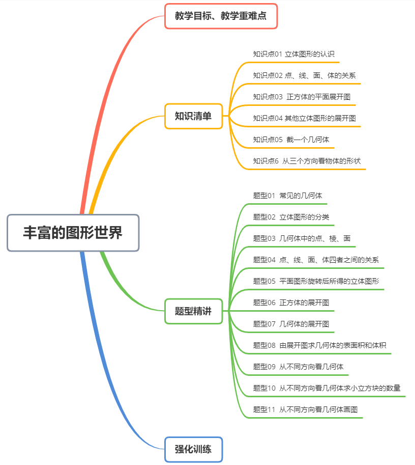

教学目标 | 1. 认识常见几何体（如直棱柱、圆柱、圆锥、球等）的基本特性，能准确辨认并对其进行分类，从组合图形中分离出基本几何体。 2. 经历展开与折叠、切截、从不同方向观察等数学活动，了解直棱柱、圆柱、圆锥的展开图，想象几何体的截面形状，会画及判断简单物体的三视图。 3. 理解点、线、面、体的关系，发展空间观念 ，激发对图形与几何的学习兴趣，培养合作交流意识。 |
教学重难点 | 1.重点 （1）准确识别不同几何体的名称、形状和构造特点，熟练对几何体进行分类。 （2）掌握正方体、直棱柱、圆柱、圆锥的展开图，以及简单物体三视图的绘制与判断 。 2.难点 （1）从切截活动中总结规律，想象同一几何体不同角度切截所得截面的不同形状，理解截面与几何体的关系。 （2）根据从上面看到的形状图及相应位置立方块数量，画出从正面和左面看到的形状图，由三视图描述几何体或实物原型。 |

知识点01 立体图形的认识
1.有些几何图形（如长方体、正方体、圆柱、圆锥、棱柱、棱锥、球等）的各部分不都在同一个平面内，这就是立体图形．
2.立体图形分类：除了按照柱体、锥体、球分类，也可以按照围成几何体的面是否有曲面划分：①有曲面：圆柱、圆锥、球等；②没有曲面：棱柱、棱锥等.
3.棱柱的有关概念及其特征:
①在棱柱中，相邻两个面的交线叫做棱，相邻两个侧面的交线叫做侧棱，棱柱所有侧棱长都相等，棱柱的上下底面的形状、大小相同，并且都是多边形；棱柱的侧面形状都是平行四边形.
②棱柱的顶点数、棱数和面数之间的关系：底面多边形的边数n确定该棱柱是n棱柱，它有2n个顶点，3n条棱，n条侧棱，有n+2个面，n个侧面.
知识点02 点、线、面、体的关系
①体与体相交成面，面与面相交成线，线与线相交成点．
②点动成线，线动成面，面动成体．
③点、线、面、体组成几何图形，点、线、面、体的运动组成了多姿多彩的图形世界．
知识点03 正方体的平面展开图
正方体是特殊的棱柱，它的六个面都是大小相同的正方形，将一个正方体的表面展开，可以得到11种不同的展开图，把它归为四类：一四一型有6种；二三一型有3种；三三型有1种；二二二型有1种.
正方体展开图口诀： ①一线不过四;田凹应弃之； ②找相对面：相间，“Z”端是对面；③找邻面：间二，拐角邻面知.
知识点04 其他立体图形的展开图
常见的几何体的展开图有圆柱、圆锥、棱柱、正方体、棱锥。特殊：球没有展开图
①圆柱的表面展开图是两个圆（作底面）和一个长方形（作侧面）。
②圆锥的表面展开图是一个圆（作底面）和一个扇形（作侧面）
③棱柱的表面展开图是两个完全相同的多边形（作底面）和几个长方形（作侧面）
知识点05 截一个几何体
用一个平面去截一个几何体，截出的面叫做截面．截面的形状可能是三角形、四边形、五边形、六边形或圆等等．
知识点6 从三个方向看物体的形状
一般是从以下三个方向：(1)从正面看；(2)从左面看；(3)从上面看．（如下图）


题型01 常见的几何体
【典例1】下列物品类似正方体的有（ ）
A． B．
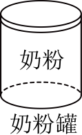
C．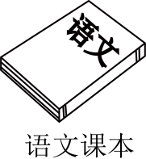
D．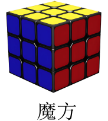
【答案】D
【分析】本题主要考查了常见的几何体，熟悉几何体的特征是解题的关键．根据正方体的判断即可．
【详解】解：根据正方体的特征得知常用三阶魔方类似正方体．
故选：D．
【变式1】下列物体中，可以抽象为圆锥的是（ ）
A． B． C．
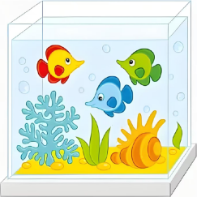
D．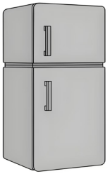
【答案】B
【分析】本题考查了圆锥的识别，正确的识别图象是解决本题的关键．根据圆锥的基本图象对各个选项进行判断即可．
【详解】解：A，抽象出来是球，不合题意；
B，抽象出来是圆锥，符合题意；
C，抽象出来是圆柱，不合题意；
D，抽象出来是长方体，不符合题意；
故选：B．
【变式2】下列物体中，形状类似圆锥的是（ ）
A． B． C． D．
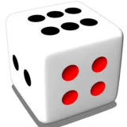
【答案】B
【分析】此题主要考查几何体的识别，解题的关键是熟知圆锥的特点．根据圆柱、圆锥、球体、正方体的主要特点判断即可；
【详解】解：A是圆柱体，B是圆锥，C是球体，D是正方体，
故选：B．
【变式3】下列几何体中，是圆锥的为（ ）
A． B．
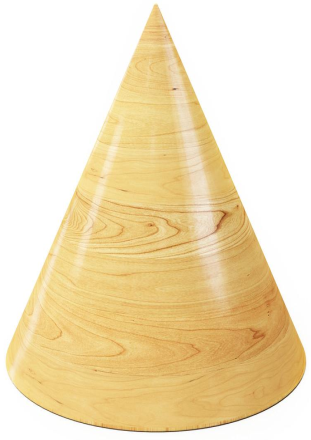
C．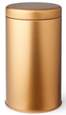
D．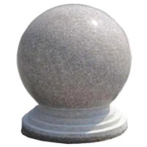
【答案】B
【分析】本题考查了几何体的认识，根据圆锥的定义进行逐项分析，即可作答．
【详解】
解：观察四个选项，是圆锥的，
故选：B
题型02 立体图形的分类
【典例2】观察下图中各几何体的特征，回答下列问题：
将上述几何体按如下两种方式进行分类（请填写序号）：
（1）按形状来划分，柱体有 ，球体有 ，锥体有 ；
（2）按几何体有无顶点来划分， 为一类，几何体有顶点； 为一类，几何体无顶点．
【答案】 ①②④ ③ ⑤ ①②⑤ ③④
【分析】本题考查几何体的分类，掌握知识点是解题的关键．
（1）根据柱体，球体，锥体的定义，即可解答；
（2）根据柱体，球体，锥体的特征，即可解答
【详解】解：（1）由柱体，球体，锥体的定义，可按形状来划分，柱体有①②④，球体有③，锥体有⑤；
（2）由柱体，球体，锥体的特征，可按几何体有无顶点来划分，①②⑤为一类，几何体有顶点；③④为一类．
故答案为：①②④；③；⑤；①②⑤；③④．
【变式1】将如图几何体分类，柱体有 ，锥体有 ，球体有 ．（填序号）
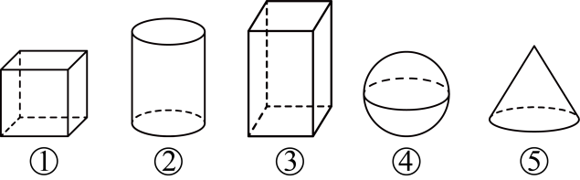
【答案】 ①②③ ⑤ ④
【分析】本题考查了认识立体图形，熟练掌握各定义是解题关键．解这类题首先要明确柱体、锥体、球体的概念，然后根据图示进行解答即可．
【详解】解：柱体包括圆柱和棱柱，所以柱体有①②③；
锥体包括圆锥和棱锥，所以锥体有⑤；
球体属于单独的一类，是有且只有一个连续曲面的立体图形，所以球体有④；
故答案为：①②③，⑤，④．
【变式2】将图中的几何体分类，柱体有 ，锥体有 （填序号）．

【答案】 （1）（2）（3） （5）（6）
【分析】本题考查了几何体的分类，几何体一般分为柱体、锥体和球，首先要明确柱体，锥体的概念和定义，然后根据图示进行解答．
【详解】解：柱体分为圆柱和棱柱，所以柱体有：（1）、（2）、（3）；
锥体包括棱锥与圆锥，所以锥体有（5）、（6）．
故答案为：（1）、（2）、（3）；（5）、（6）．
【变式3】如图是8个立体图形．其中，是柱体的有 ，是锥体的有 ，有曲面的有 ．（填序号）
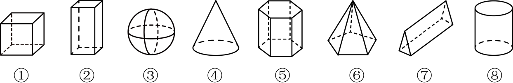
【答案】 ①②⑤⑦⑧ ④⑥ ③④⑧
【分析】本题主要考查了认识立体图形，正确区分它们的定义和组成是解题关键．分别根据柱体、锥体、曲面的定义进行求解即可．
【详解】解：柱体有①②⑤⑦⑧，锥体有④⑥，有曲面的有③④⑧，
故答案为：①②⑤⑦⑧；④⑥；③④⑧．
题型03 几何体中的点、棱、面
【典例3】如图所示的几何体是由 个面组成的，其中平面有 个，曲面有 个；面与面相交形成 条线，其中直线有 条，曲线有 条．
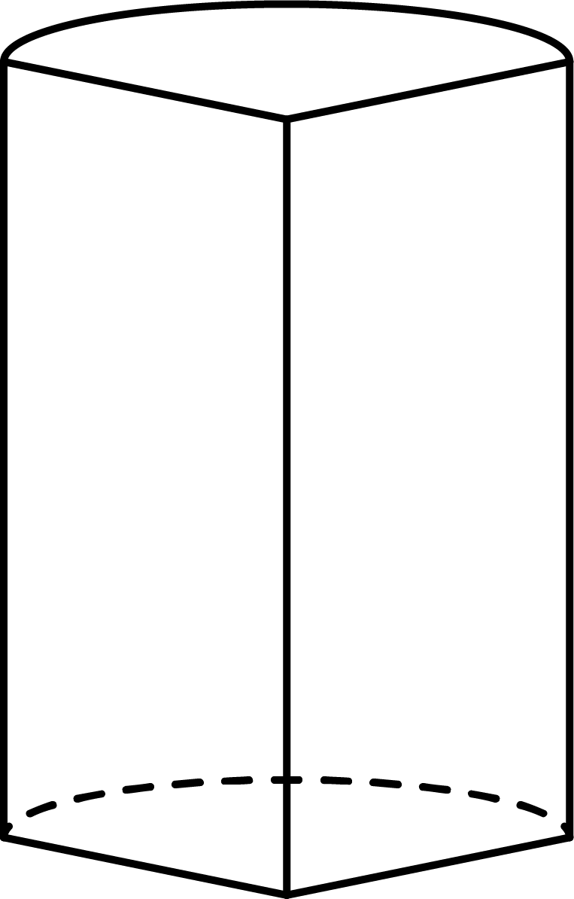
【答案】 5 4 1 9 7 2
【分析】本题考查了几何体的构成要素及其分类的知识点，包括面（平面与曲面）、线（直线与曲线）的识别与计数，解题关键在于准确观察几何体结构，区分不同类型的面和线，并正确计数．先观察几何体，分别数出组成几何体的面的数量，再区分平面和曲面；接着数出面与面相交形成线的数量，再区分直线和曲线．
【详解】解：观察几何体可知，该几何体有上下两个底面（扇形），还有侧面（由 2个长方形平面和 1 个曲面组成），总共
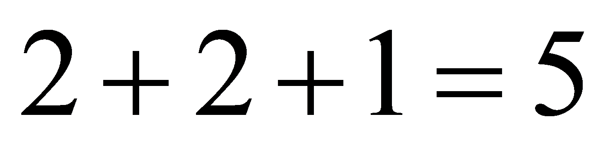
个面；其中平面有上下底面中的扇形的面和 2个长方形侧面，共 个平面；
个平面；
曲面有 1 个（即侧面中圆形对应的曲面部分）；
面与面相交形成线，上下底面的边以及侧面的边，总共
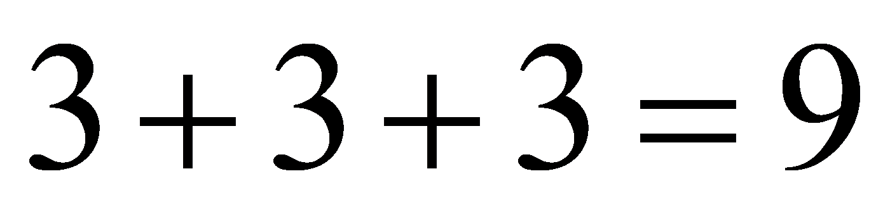
条线；其中直线有上下底面中扇形的边和 2 个长方形侧面的边，共
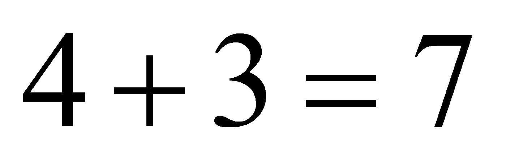
条直线；曲线有 2 条（即上下底面中扇形的弧）．
故答案为：①5；②4；③1；④9；⑤7；⑥2．
【变式1】如图四个几何体分别是三棱柱，四棱柱，五棱柱和六棱柱，三棱柱有 个面，
个面， 条棱，
条棱， 个顶点，观察图形，填写下面的空．
个顶点，观察图形，填写下面的空．
（1）四棱柱有 个面， 条棱， 个顶点；
（2）六棱柱有 个面， 条棱， 个顶点；
（3）由此猜想 棱柱有 个面， 条棱， 个顶点．
棱柱有 个面， 条棱， 个顶点．
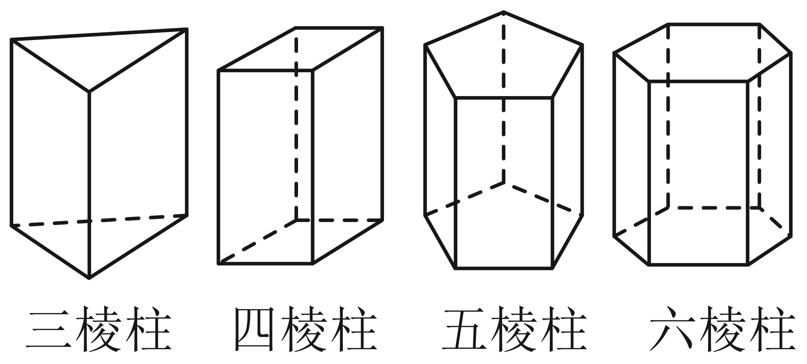
【答案】 


 /
/


【详解】此题考查了认识立体图形，熟记常见棱柱的特征是解题的关键；
（1）结合已知四棱柱特征，即可求解；
（2）结合六棱柱的特征，即可求解；
（3）可知棱柱一定有 个面，条棱和个顶点；
个面，条棱和个顶点；
【解答】解：（1）四棱柱有个面，条棱，个顶点；
（2）六棱柱有个面，条棱，个顶点；
（3）由此猜想棱柱有个面，条棱，个顶点．
故答案为：（1），，；（2），，；（3），，．
【变式2】如图，四个几何体分别是三棱柱、四棱柱、五棱柱和六棱柱，三棱柱有5个面、9条棱、6个顶点，观察图形并填空．
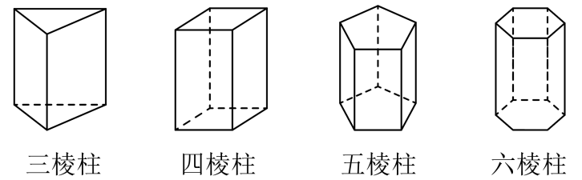
(1)四棱柱有 个面， 条棱， 个顶点；
(2)五棱柱有 个面， 条棱， 个顶点；
(3)六棱柱有 个面， 条棱， 个顶点；
(4)由此猜想棱柱有 个面， 条棱， 个顶点．
【答案】(1)6，12，8
(2)7，15，10
(3)8，18，12
(4) ，，
，，
【分析】本题考查了立体图形中的顶点、棱、面．
（1）四棱柱面数：2个底面 4个侧面，棱数：
4个侧面，棱数：
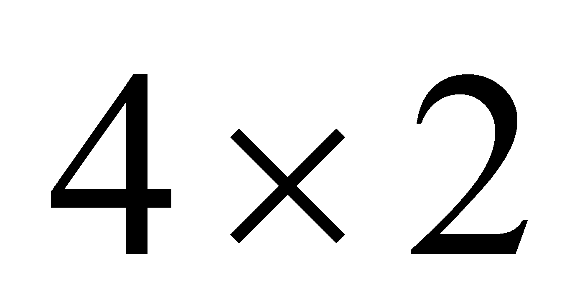
个底面棱4个侧棱，顶点数：个底面顶点；（2）五棱柱面数：2个底面5个侧面，棱数：
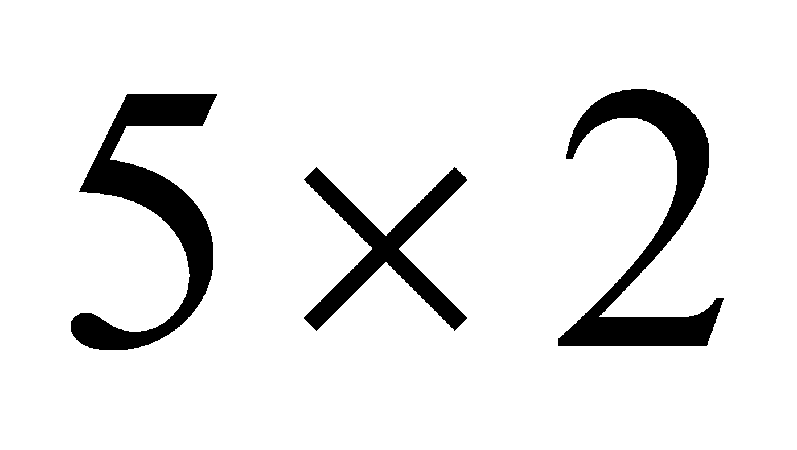
个底面棱5个侧棱，顶点数：个底面顶点；（3）六棱柱面数：2个底面6个侧面，棱数：
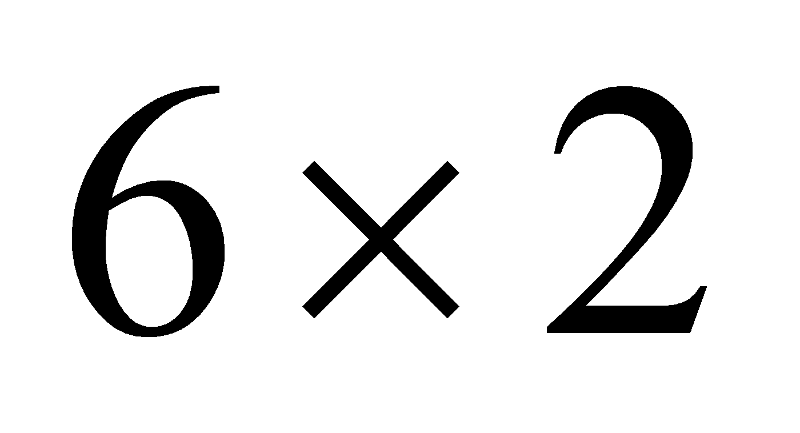
个底面棱6个侧棱，顶点数：个底面顶点；（4）棱柱面数：2个底面个侧面，棱数：
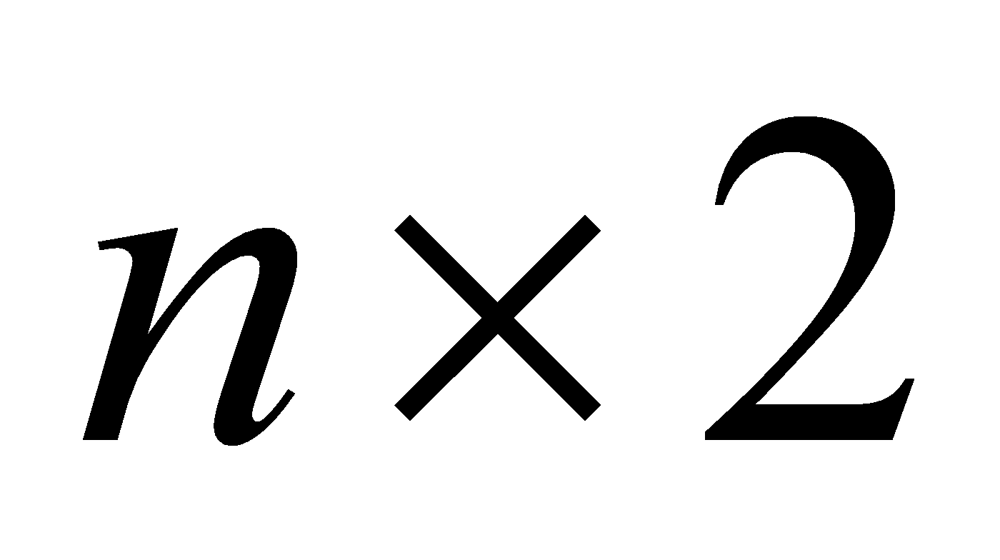
个底面棱个侧棱，顶点数：个底面顶点．【详解】（1）解：四棱柱有6个面，12条棱，8个顶点；
（2）五棱柱有7个面，15条棱，10个顶点；
（3）六棱柱有8个面，18条棱，12个顶点；
（4）由此猜想棱柱有个面，条棱，个顶点．
【变式3】欧拉定理是数学史上最著名的定理之一，由瑞士数学家莱昂哈德·欧拉于1752年提出．这个定理阐述了凸多面体中顶点数（ ）、面数（
）、面数（ ）和棱数（
）和棱数（ ）之间存在一定的数量关系．
）之间存在一定的数量关系．
名称 | 图形 | 顶点数（ | 面数（ | 棱数（ |
四面体 | 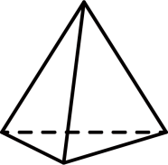 | 4 | 4 | 6 |
六面体 | 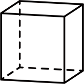 | 8 | 6 | 12 |
八面体 | 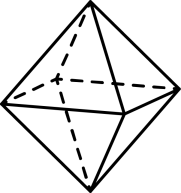 |
| 8 | 12 |
十二面体 | 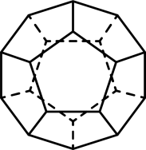 | 20 | 12 | 30 |
（1）表中 的值为 ；
的值为 ；
（2）在简单多面体中，，，之间的数量关系是 ．
【答案】 6 
【分析】本题考查多面体，总结归纳出多面体的顶点，面，棱的关系是解题的关键．
（1）根据图形直接数出顶点个数即可；
（2）根据观察表格数据可得，顶点数和面数的和减去棱数刚好等于2，即可．
【详解】解：（1）由图或得八面体共有6个顶点，
∴
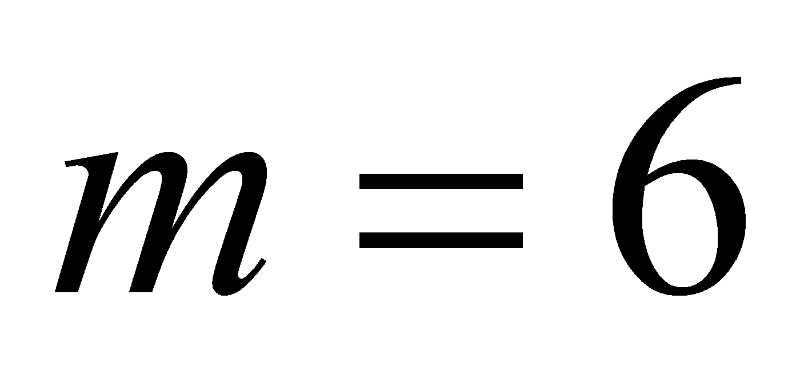
；故答案为：6．
（2）三棱锥中， ；
；
长方体中， ；
；
五棱柱中，
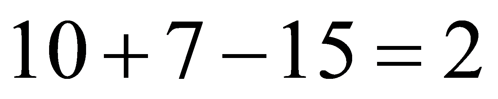
；正八面体中， ；
；
∴顶点数（V）、面数（F）、棱数（E）之间存在的代数关系式为：
．
故答案为：．
题型04 点、线、面、体四者之间的关系
【典例4】圆规在纸上划过会留下一个封闭的痕迹，这种现象说明 ，一个人手里拿着一个绑在一根棍上的半圆面，当这个人把这个半圆面绕着这根棍飞快旋转起来时就会看到一个球，这种现象说明 ．
【答案】 点动成线 面动成体
【分析】本题考查了点、线、面、体之间的关系，根据点动成线、线动成面、面动成体，并结合题干分析即可得解，熟练掌握以上知识点并灵活运用是解此题的关键．
【详解】解：圆规在纸上划过会留下一个封闭的痕迹，这种现象说明点动成线，一个人手里拿着一个绑在一根棍上的半圆面，当这个人把这个半圆面绕着这根棍飞快旋转起来时就会看到一个球，这种现象说明面动成体．
【变式1】用数学知识解释下列现象：
（1）飞机做飞行表演时的“飞机拉线”，解释为 ．
（2）汽车雨刷刷过的路径，解释为
（3）一个圆绕着它的直径所在的直线旋转一周形成球，解释为 ．
【答案】 点动成线 线动成面 面动成体
【分析】本题考查点、线、面、体之间的动态关系概念，关键根据这些现象与概念的对应关系来解答问题．点动成线，即一个点运动后会形成一条线；线动成面，一条线运动后会形成一个面；面动成体，一个面运动后会形成一个立体图形．
【详解】解：（ ）飞机进行飞行表演时的“飞机拉线”，解释：点动成线；
）飞机进行飞行表演时的“飞机拉线”，解释：点动成线；
（ ）汽车雨刷刷过的路径，解释：线动成面；
）汽车雨刷刷过的路径，解释：线动成面；
（ ）一个圆绕着它的直径所在直线旋转一周形成球，解释：面动成体；
）一个圆绕着它的直径所在直线旋转一周形成球，解释：面动成体；
故答案为：①点动成线②线动成面③面动成体
【变式2】汽车雨刷的摆动、将教室前的投影幕展开，这些现象给我们以 的形象；硬币在桌面上快速旋转、向玻璃杯中注水时水面的上升，这些现象给我们以 的形象．
【答案】 线动成面 面动成体
【分析】此题考查点、线、面、体定义及它们之间的关系，根据线动成面，面动成体的实际意义逐项分析判断即可．
【详解】解：汽车雨刷的摆动、将教室前的投影幕展开，这些现象给我们以线动成面的形象；硬币在桌面上快速旋转、向玻璃杯中注水水面的上升，这些现象给我们以面动成体的形象，
故答案为：线动成面，面动成体
【变式3】（1）粉笔在黑板上写出一个个字，这说明了 ，黑板擦在黑板上擦出一片干净的区域，用数学知识可以解释为 ，与此原理相同的例子还有 ．
（2）宾馆里旋转的大门给我们以 的形象．
【答案】 点动成线 线动成面 车轮旋转时看起来像一个完整的圆面（合理即可） 面动成体
【分析】此题考查了点、线、面、体，正确理解点线面体的概念是解题的关键．
（1）根据“点动成线，线动成面，面动成体”的概念直接回答即可；
（2）根据“点动成线，线动成面，面动成体”的概念直接回答即可．
【详解】（1）粉笔在黑板上写出一个个字，这说明了点动成线，黑板擦在黑板上擦出一片干净的区域，用数学知识可以解释为线动成面，与此原理相同的例子还有车轮旋转时看起来像一个完整的圆面；
故答案为：点动成线，线动成面，车轮旋转时看起来像一个完整的圆面（合理即可）；
（2）宾馆里旋转的大门给我们以面动成体的形象，
故答案为：面动成体．
题型05 平面图形旋转后所得的立体图形
【典例5】如图，有一个长 、宽
、宽 的长方形纸板，现要求以其一组对边中点所在直线为轴旋转一周，可按两种方案进行操作．
的长方形纸板，现要求以其一组对边中点所在直线为轴旋转一周，可按两种方案进行操作．
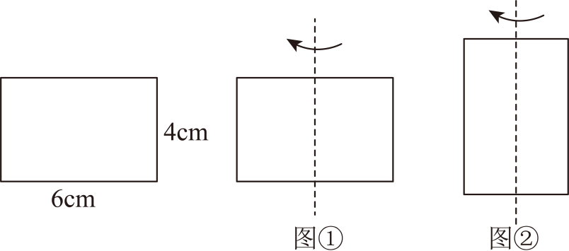
方案一：以较长的一组对边中点所在直线为轴旋转，如图①；
方案二：以较短的一组对边中点所在直线为轴旋转，如图②．
(1)上述操作能形成的几何体是________，说明的事实是___________
(2)请通过计算说明哪种方案得到的几何体的体积较大．
【答案】(1)圆柱体，面动成体
(2)方案一
【分析】本题考查了面动成体，圆柱的体积公式，解题的关键在于熟练掌握相关知识．
（1）根据面动成体解答即可；
（2）先分别求出两个方案所得几何体的体积再比较大小即可．
【详解】（1）解：上述操作能形成的几何体是圆柱体，说明的事实是面动成体；
故答案为：圆柱体，面动成体；
（2）解：方案一得到的几何体的体积为：
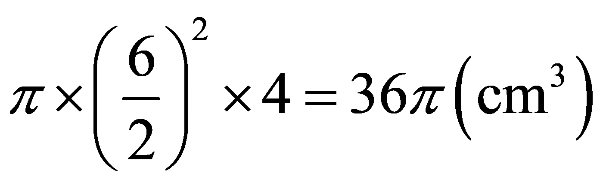
，方案二得到的几何体的体积为：
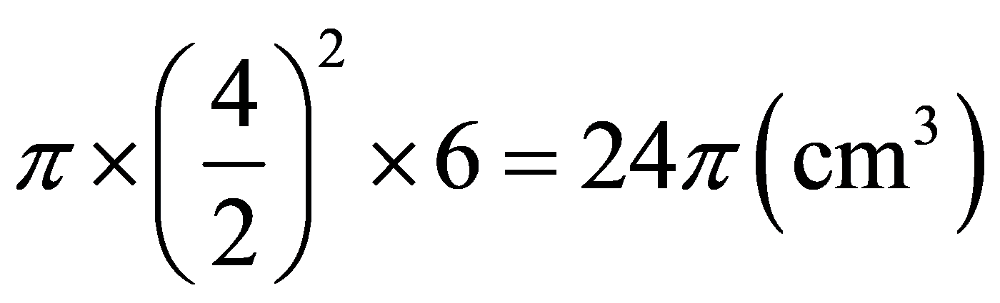
，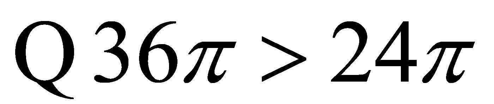
， 方案一得到的几何体的体积较大．
方案一得到的几何体的体积较大．
【变式1】已知一个直角三角形的两直角边长分别为3和6，将直角三角形绕它的直角边所在直线旋转一周可以得到一个几何体．
(1)这个几何体的名称为______，这个现象用数学知识可以解释为______；
(2)求这个几何体的体积．（结果保留 ）
）
【答案】(1)圆锥，面动成体
(2)圆锥的体积为 或
或
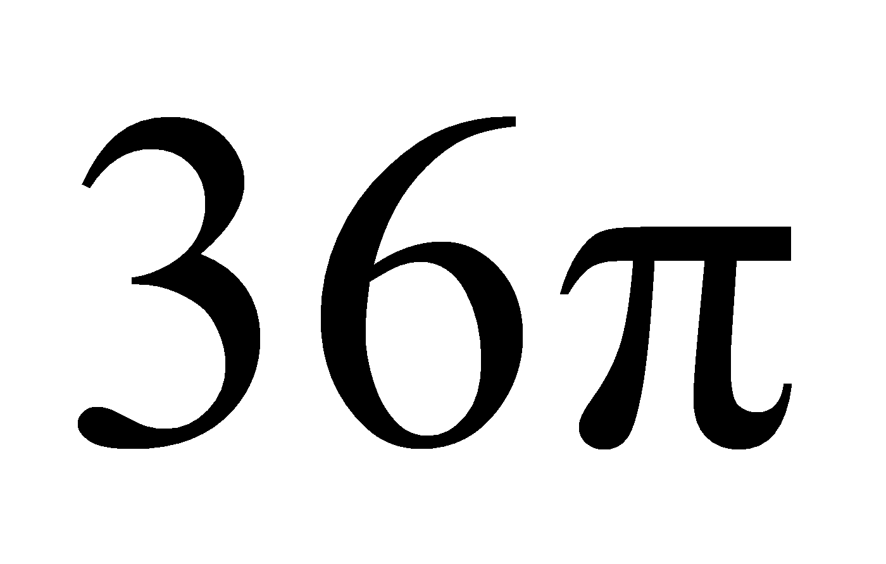
【分析】（1）根据圆锥的特征，面动成体即可解答；
（2）分两种情况进行计算，即可解答．
本题考查了面动成体，圆锥的体积，熟练掌握公式是解题的关键．
【详解】（1）解：这个几何体的名称为圆锥，这个现象用数学知识可以解释为面动成体，
故答案为：圆锥，面动成体；
（2）解：①绕直角三角形较长的直角边旋转时，圆锥的体积为
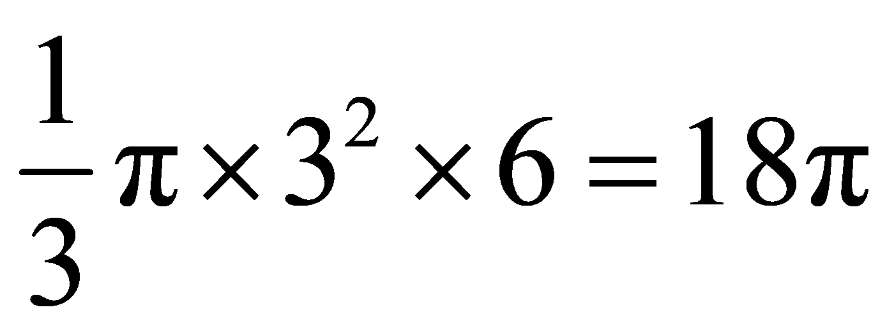
；②绕直角三角形较短的直角边旋转时，圆锥的体积为
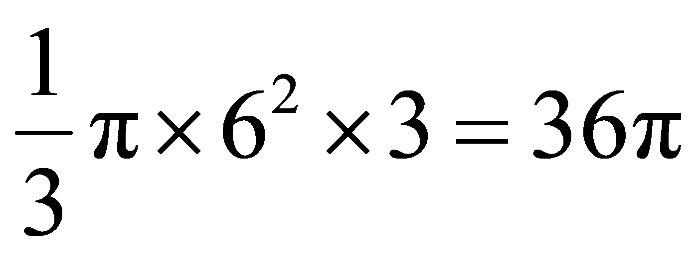
．综上所述，圆锥的体积为或．
【变式2】下图所示的是由直角三角形和正方形拼成的四边形．
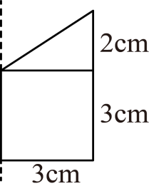
(1)将这个四边形绕虚线旋转一周，可以得到一个立体图形，这能说明的事实是________（填序号）．
①点动成线； ②线动成面； ③面动成体．
(2)求得到的立体图形的体积（结果保留）．
【答案】(1)③
(2)
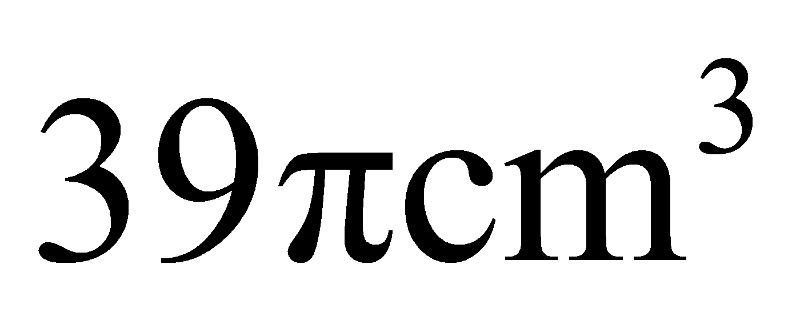
【分析】本题考查了点、线、面、体的关系及旋转体体积的计算，解题的关键是理解面动成体的原理，结合旋转轴和相关边长准确确定旋转后立体图形的组成及参数，再运用体积公式计算．
（1）根据四边形绕虚线旋转成立体图形的过程，判断体现的点、线、面、体关系；
（2）明确旋转沿正方形一边后，立体图形由底面半径 、高
、高 的圆柱减去底面半径、高
的圆柱减去底面半径、高 的圆锥组成，分别计算体积后相减．
的圆锥组成，分别计算体积后相减．
【详解】（1）解：四边形绕虚线旋转一周得到立体图形，说明面动成体．
故答案为：③．
（2）由题意，旋转沿正方形的一边，旋转后立体图形可看作底面半径为、高为 的圆柱，减去一个底面半径为、高为的圆锥．
的圆柱，减去一个底面半径为、高为的圆锥．
圆柱体积
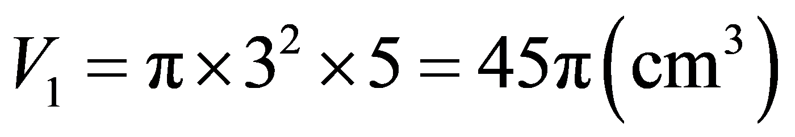
圆锥体积 ．
．
总体积 ．
．
答：得到的立体图形的体积为 ．
．
【变式3】当同一个平面图形绕不同的轴旋转时，得到的立体图形一般不同．

(1)如图1是一张长方形纸片， 长为
长为 ，
， 长为
长为 ．若将这个长方形纸片绕它的对边中点所在直线旋转一周，求形成的几何体的表面积．（结果保留π）
．若将这个长方形纸片绕它的对边中点所在直线旋转一周，求形成的几何体的表面积．（结果保留π）
(2)已知一个直角三角形，它的各边长如图2所示．当三角形绕着图中所示的虚线旋转一周时，得到的是一个几何体，你能求出这个几何体的体积吗？（结果保留π）
【答案】(1) 或
或
(2)
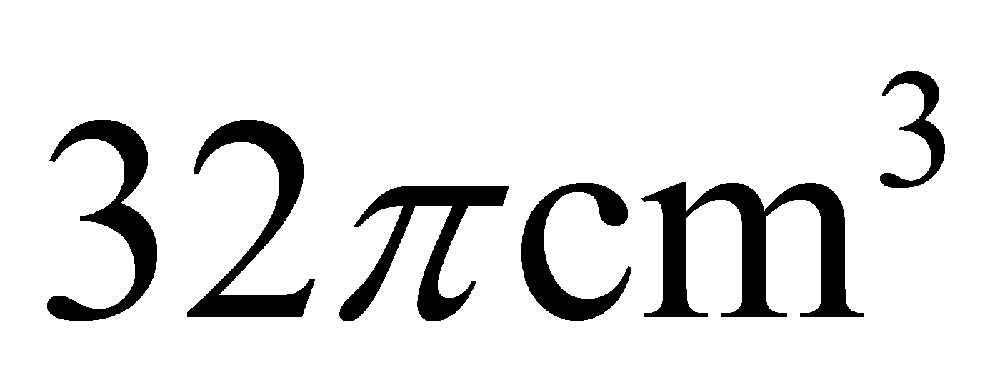
【分析】本题考查点、线、面、体以及几何体的表面积，理解“面动成体”是正确解答的前提，掌握圆柱体、圆锥体体积的计算方法是正确解答的关键．
（1）分绕 和两边中点所在直线旋转一周和绕和
和两边中点所在直线旋转一周和绕和 两边中点所在直线旋转一周两种情况解答即可；
两边中点所在直线旋转一周两种情况解答即可；
（2）根据“面动成体”得出所得到的几何体的特征，再根据圆柱体、圆锥体积的计算方法进行计算即可．
【详解】（1）解：当绕和两边中点所在直线旋转一周时，形成的几何体的表面积为： ；
；
当绕和两边中点所在直线旋转一周时，形成的几何体的表面积为： ；
；
故形成的几何体的表面积为
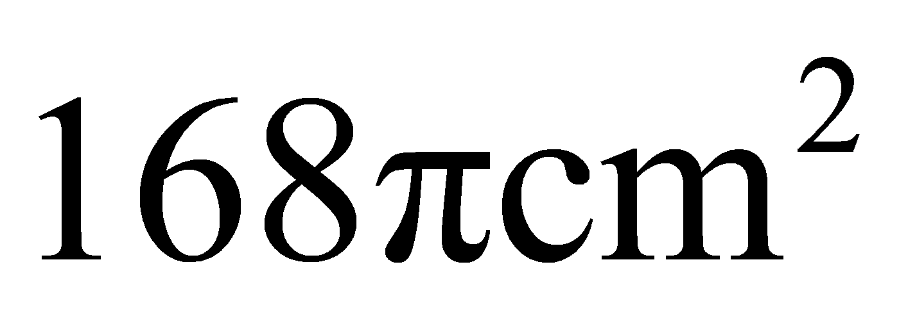
或 ；
；（2）解：三角形绕着图中所示的虚线旋转一周时，得到的是一个圆柱挖去一个圆锥后剩余的几何体，其中圆柱和圆锥的底面半径均为 ，高均为，
，高均为，
得到的几何体的体积
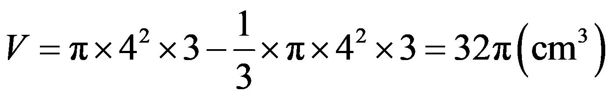
．题型06 正方体的展开图
【典例6】《三字经》中写道“幼习业，壮致身”，意在激励人们在年少时努力学习，为将来成就一番事业打下基础，现将这六个字分别写在某正方体的表面上，如图是它的一种展开图，则在原正方体中与“幼”字所在面相对的面上的字是（ ）
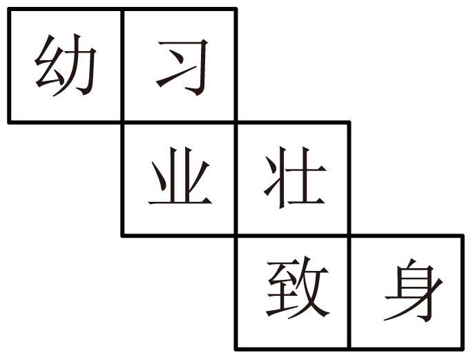
A．业 B．壮 C．致 D．身
【答案】B
【分析】根据正方体表面展开图找相对面的方法：“Z”字两端是对面，即可解答．
本题考查了正方体相对两个面上的文字，熟练掌握根据正方体表面展开图找相对面的方法是解题的关键．
【详解】在原正方体中与“幼”字所在面相对的面上的字是“壮”，
故选：B
【变式1】下面的展开图中，可以围成正方体的共有（ ）．
A．个 B．个 C．个 D． 个
个
【答案】C
【分析】本题考查了正方体的展开图，根据正方体的展开图逐项判断即可求解，掌握正方体的展开图是解题的关键．
【详解】解：第个、第个、第个图形可以围成正方体，第个不可以围成正方体，
∴可以围成正方体的共有个，
故选： ．
．
【变式2】如图，正方体的六个面上有三个面有图案，它的展开图可能是（ ）
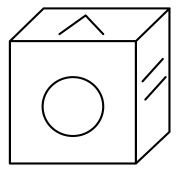
A．
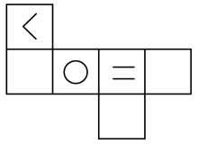
B．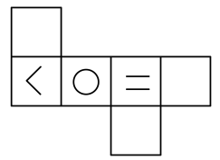
C．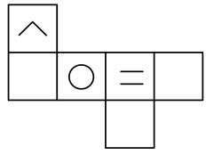
D．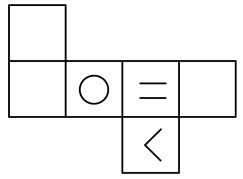
【答案】A
【分析】本题考查几何体的展开图，掌握正方体表面展开图的特征是正确解答的关键．
根据正方体表面展开图的特征进行判断即可．
【详解】解：由正方体可得，三个图案均是相邻的，
A、还原正方体后，符合题意；
B、<与＝是相对的两面，不符合题意；
C、还原正方体后，不等号的尖尖向右，不符合题意；
D、还原正方体后，<在下面，且不等号的尖尖朝前，不符合题意，
故选：A．
【变式3】如图，小红制作了一个相对面图案均相同的正方体礼盒，则这个礼盒的展开图可能是（ ）
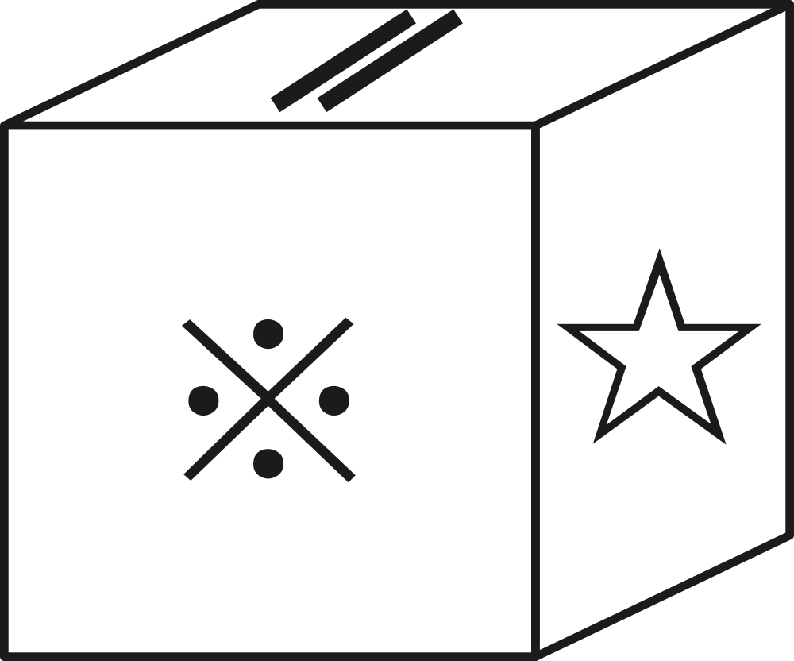
A．
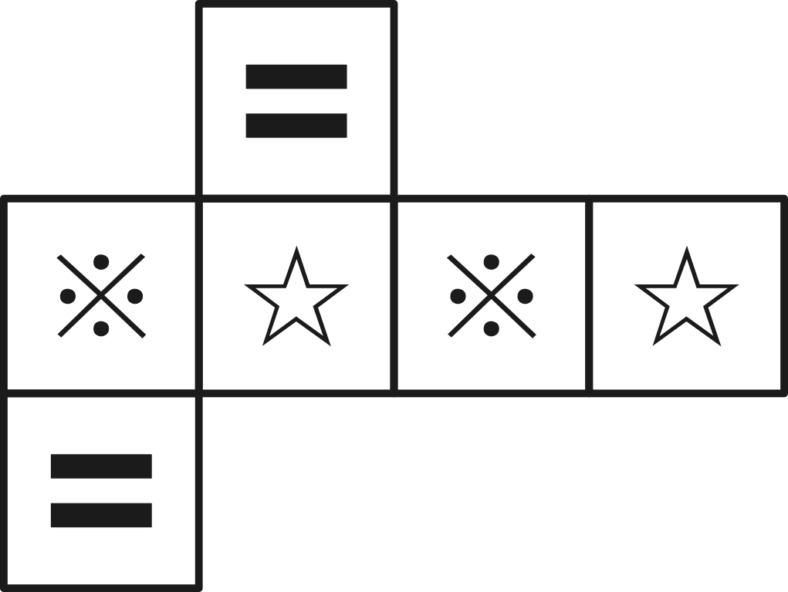
B．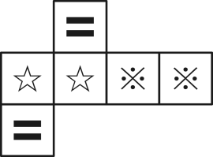
C．D．【答案】A
【分析】本题考查了正方体的展开与折叠．同时考查了空间想象力，结合正方体的展开图的对立面是每隔一个正方形，据此即可作答．
【详解】
解：根据题意得：这个正方体礼品盒的平面展开图可能是，
故选A．
题型07 几何体的展开图
【典例7】下列平面图形能折叠成圆柱的是（ ）
A． B．
B． C．
C． D．
D．
【答案】A
【分析】本题主要考查了圆柱的侧面展开图，熟练掌握圆柱的侧面展开图的样子是解题的关键．
根据圆柱的侧面展开图即可得到答案．
【详解】解：A.该选项图形可以折叠成圆柱，符合题意；
B. 该选项图形可以折叠成五棱柱，不符合题意；
C. 该选项图形可以折叠成圆锥，不符合题意；
D. 该选项图形可以折叠成三棱柱，不符合题意；
故选：A．
【变式1】下列图形中是圆锥展开图的是（ ）
A． B． C． D．
【答案】C
【分析】本题考查了常见几何体的展开图，根据三棱锥、圆柱、圆锥、三棱柱的展开图，逐一判断即可．
【详解】解：A.三棱锥的展开图，故不符合题意；
B.圆柱的展开图，故不符合题意；
C.圆锥展开图，故符合题意；
D. 三棱柱的展开图，故不符合题意；
故选：C．
【变式2】下列图形能折叠成三棱锥的是（ ）
A． B． C． D．
【答案】D
【分析】本题考查几何体的展开图．根据三棱锥的底面是三角形，侧面为等腰三角形，进行判断即可．
【详解】解：∵三棱锥的底面是三角形，侧面为等腰三角形，
∴能折叠成三棱锥的是D图形，
故选：D．
【变式3】下列图形经过折叠可以围成一个完整的正六棱柱的是（ ）
A．B．C．D．
【答案】B
【分析】本题考查几何体的展开图．熟记常见的几何体的展开图，是解题的关键．根据正六棱柱的展开图即可解答．
【详解】解：A、能围成一个无盖的正六棱柱，不符合题意；
B、可以围成一个正六棱柱，符合题意；
C、两个底面在同侧，不能围成正六棱柱；不符合题意；
D、侧面只有五个面，不能围成正六棱柱；不符合题意；
故选：B．
题型08 由展开图求几何体的表面积和体积
【典例8】如图所示是一个几何体的表面展开图．
(1)求该几何体的表面积（结果保留）
(2)求该几何体的体积（结果保留）．
(3)和这个圆柱等底等高的圆锥体积是 ．
【答案】(1)
(2)
(3)
【分析】本题考查根据展开图求几何体的表面积和体积，熟练掌握圆柱体的表面积和体积的计算公式，圆锥的体积的计算公式是解题的关键：
（1）由展开图可知，几何体为圆柱体，根据圆柱体的表面积等于展开图的侧面积加上两个底面圆的面积，进行计算即可；
（2）根据圆柱体的体积公式进行计算即可；
（3）根据圆柱体和圆锥的体积的关系进行计算即可．
【详解】（1）解：由展开图可知，几何体为底面直径为4，高为5的圆柱体，
∴表面积为：；
（2）圆柱体的体积为：
（3）圆锥体的体积为圆柱体体积的 ，即为．
，即为．
故答案为：
【变式1】如图所示为一个棱柱形状的食品包装盒的展开图．

(1)这个食品包装盒的几何体名称是________；
(2)根据图中所给数据，求这个食品包装盒的侧面积．
【答案】(1)五棱柱
(2)
【分析】本题考查了几何体的展开图，解决本题的关键是熟悉由平面图形的折叠及常见立体图形的展开图．
（1）由平面图形的折叠及常见立体图形的展开图，即可解答；
（2）侧面积为5个长方形的面积之和，即可解答．
【详解】（1）解：这个包装盒为五棱柱；
（2）解： ．
．
【变式2】某几何体的展开图如图所示．
(1)该几何体是 ；(填名称)
(2)求这个几何体的体积．
【答案】(1)长方体
(2)
【分析】（1）根据长方体有6个面，相对两个面的形状大小完全相同可知该几何体为长方体．
（2）由该长方体的平面展开图可知宽为，高为，长为 ，根据才给他体积公式即可可求得该长方体的体积．
，根据才给他体积公式即可可求得该长方体的体积．
本题主要考查了长方体的平面展开图，熟练掌握长方体的特征是解题的关键．
【详解】（1）解：该几何体是长方体.
故答案为：长方体
（2）解：该长方体的宽是，高是，长是，
所以这个几何体的体积是.
【变式3】【问题情境】 《制作无盖的长方体纸盒》是苏科版数学课本七年级上册的课题学习内容，某综合实践小组参考这一课题中的内容，开展了“制作长方体纸盒”的实践活动．
【问题解决】
(1)在如图1所示的四个图形中，能够通过折叠围成有盖的长方体纸盒的是______（填序号）．
(2)该小组利用边长为的正方形纸板设计了如下两种不同的制作长方体纸盒的方案．

①按如图2所示的方案制作一个无盖的长方体纸盒，其操作步骤为：先在纸板的四个角上剪去个边长为 的小正方形，再沿虚线折叠纸板．若
的小正方形，再沿虚线折叠纸板．若 ，，则该无盖长方体纸盒的底面周长为_______
，，则该无盖长方体纸盒的底面周长为_______ ．
．
②按如图3所示的方案制作一个有盖的长方体纸盒，其操作步骤为：先在纸板的四个角上剪去个边长为 的小正方形和个同样大小的小长方形，再沿虚线折叠纸板．若
的小正方形和个同样大小的小长方形，再沿虚线折叠纸板．若 ，
， ，求该有盖长方体纸盒的体积．
，求该有盖长方体纸盒的体积．
【答案】(1)①②④
(2)① ；②
；②
【分析】本题考查展开图折叠成几何体，掌握棱柱的展开图的特征是正确解答的前提，根据展开图得出折叠后长方体的长、宽、高是解决问题的关键．
（1）根据长方体的展开图特征求解即可；
（2）①由折叠可得底面是边长为 的正方形，进而求出底面周长即可；②由展开与折叠可知，折叠成长方体的长、宽、高分别为、、
的正方形，进而求出底面周长即可；②由展开与折叠可知，折叠成长方体的长、宽、高分别为、、 ，根据体积公式进行计算即可．
，根据体积公式进行计算即可．
【详解】（1）解：能够通过折叠围成有盖的长方体纸盒的是①②④，
故答案为：①②④；
（2）①该无盖长方体纸盒的底面周长为，
故答案为： ；
；
②该长方体纸盒的长为，宽为，高为，
该有盖长方体纸盒的体积为．
题型09 从不同方向看几何体
【典例9】观察如图的物体，从左面看到的图形是（ ）
A． B． C． D．
【答案】B
【分析】本题考查从不同方向观察几何体，从左面观察该组合体，即可求解．
【详解】解：从左面看，有2列，其中第1列有2个小正方形，第2列有1个小正方形，如下图所示：
故选：B．
【变式1】某物体如图所示，其从上面看到的图形是（ ）
A．B． C． D．
【答案】B
【分析】本题考查了三视图，三视图是从几何体的不同方向观察到的平面图形，从这个几何体的上面看到的平面图形是一个圆中有两条平行的弦．
【详解】解：从这个几何体的上面看到的平面图形是一个圆中有两条平行的弦．
故选： B．
【变式2】一个几何体零件如图所示，则从侧面看到的图形是（ ）
A． B． C． D．
【答案】B
【分析】本题考查了从不同方向看几何体，根据从侧面看所得到的图形，可直接得到答案．
【详解】解：从侧面看到的图形是：
故选：B．
【变式3】如图所示的是一根空心方管，从上面看到的形状图是（ ）
A． B． C． D．
【答案】C
【分析】本题考查从不同方向看物体，根据从上面看到的图形解答即可．
【详解】解：从上面看空心长方体是一个长方形，由于看不见的部分画虚线，所以该长方形中间有两条平行的线段，且为虚线，
所以其俯视图为C．
故选：C．
题型10 从不同方向看几何体求小立方块的数量
【典例10】珍珍观察一个用小正方体搭成的几何体，从不同方向看到的图形如图所示，这个几何体至少需要 个小正方体．
【答案】7
【分析】本题考查了观察物体的方法，结合题意分析解答即可， 根据观察物体的方法，结合从上面看到的形状可知，几何体底层有5个小正方体，结合从前面和左面看到的形状，可知几何体有2层，上层至少有2个小正方体，据此结合题意分析解答即可．
【详解】解：观察一个用小正方体搭成的几何体，从不同方向看到的图形如图所示，
则几何体底层有5个小正方体，结合从前面和左面看到的形状，可知几何体有2层，上层至少有2个小正方体，
这个几何体至少需要7个小正方体．
故答案为：7．
【变式1】由若干个相同的小正方体堆成的几何体，从正面和上面看该几何体得到的形状图如图所示．若最多需要个小正方体，最少需要个小正方体，则 ．
．
【答案】
【分析】本题考查了由三视图还原立体图形，看懂三视图是解题的关键．观察所给几何体的两个视图，从俯视图中可以看出最底层小正方体的个数是 个；从主视图可以看出该几何体的层数为，中间一层至少个，最多为个小正方体；最上面至少个，最多为个小正方体，据此解答即可.
个；从主视图可以看出该几何体的层数为，中间一层至少个，最多为个小正方体；最上面至少个，最多为个小正方体，据此解答即可.
【详解】解：从俯视图中可以看出最底层小正方体的个数为，从主视图可以看出每一层小正方体的层数为层和中间一层为个到个，最上面为个到个，
∴堆成这个几何体最少需要：（个）小正方体，
最多需要：（个）小正方体，
即， ，所以．
，所以．
故答案为：．
【变式2】用若干个大小相同的小正方体搭一个几何体，从左面看和从上面看得到的形状图如图所示，则搭一个这样的几何体最少需要 个小正方体 ，最多需要 个小正方体．
【答案】 12 20
【分析】本题考查几何体的三视图画法．在从上面看到的图形上结合从左面看到的图形填上对应的数字，再判断最多和最少即可．
【详解】解：如图所示：

由图可得，搭一个这样的几何体从上面看到的图形第一层最少数量 ，最多数量
，最多数量 ；第二层最少数量，最多数量；第三层最少数量，最多数量；
；第二层最少数量，最多数量；第三层最少数量，最多数量；
∴最少需要需要个小正方体 ，最多需要个小正方体．
故答案为：12；20．
【变式3】把若干个相同的小正方体在水平桌面上堆成一个大的立体图形，下图是从正面看和从上面看的图形，则组成这个图形最少需要 个小正方体，最多需要 个小正方体．
【答案】 9 13
【分析】本题考查了从不同方向看几何体，根据不同方向看的图形确定小正方体的个数是解题的关键．结合从正面看和从上面看的图形，分析并画出组成这个图形需要小正方体最少和最多的情况，即可得出答案．
【详解】解：当组成这个图形需要小正方体最少时，从上面看的图形如下（正方形内的数字表示小正方体实际的层数）：
此时小正方体个数为（个）；
当组成这个图形需要小正方体最多时，从上面看的图形如下（正方形内的数字表示小正方体实际的层数）：
此时小正方体个数为（个）；
∴综上所述，组成这个图形最少需要9个小正方体，最多需要13个小正方体．
故答案为：9；13．
题型11 从不同方向看几何体画图
【典例11】如图是由6个大小相同的小立方块搭建的几何体，请按要求在方格内分别画出这个几何体从三个不同方向看到的形状图．
【答案】见解析
【分析】本题考查了从不同方向看几何体，良好的空间想象能力是解答本题的关键．根据从正面看有三列，从左到右每列正方形个数为1，1，2；从左面看有三列，从左到右每列正方形个数为1，2，1；从上面看有三行，从上到下每行正方形个数为1，3，1，进行画图即可．
【详解】解：如图所示：
【变式1】如图是由一些相同的小正方体组成的几何体．
(1)请在指定位置画出该几何体从正面、左面和上面看到的形状图；
(2)设小正方形的边长为 ，求这个几何体的表面积．
，求这个几何体的表面积．
【答案】(1)见解析
(2)
【分析】本题考查了从不同方向看图形．
（1）根据简单组合体的从不同方向看图形的画法，画出从正面、上面、左面看该组合体所看到的图形即可；
（2）根据表面积的计算方法求解即可．
【详解】（1）解：如图，
（2）解：，
∴这个几何体的表面积为．
【变式2】用小立方块搭一个几何体，使它从正面和上面看到的形状图如图所示，从上面看到的形状图中的小正方形中字母表示在该位置上小立方块的个数，请解答下列问题：
(1) __________，
__________， __________，
__________， __________；
__________；
(2)这个几何体最少由__________个小立方块搭成，最多由__________个小立方块搭成；
(3)当， 时，在网格图中画出这个几何体从左面看到的形状图．
时，在网格图中画出这个几何体从左面看到的形状图．
【答案】(1)3；1；1
(2)9；11
(3)见解析
【分析】（1）由从正面看到的图形可知，第二列小立方体的个数均为1，第三列的小立方体个数为3，即可求解；
（2）根据从正面看，一共有三列：第一列有2层，第二列有1层，第三列有3层；从上面看，一共有3行，从左到右，第一行有3个，第二行有2个，第三行有1个，即可求解；
（3）根据从左面看到的图形有三列，每列小正方形数目分别为3，1，2，即可求解．
【详解】（1）解：从正面看，第二列有1层，第三列有3层，
∴ ，，；
，，；
故答案为：3；1；1；
（2）解：从正面看，一共有三列：第一列有2层，第二列有1层，第三列有3层，
从上面看，一共有3行，从左到右，第一行有3个，第二行有2个，第三行有1个，
∴这个几何体最少由个小立方块搭成，最多由个小立方块搭成；
故答案为：9；11；
（3）解：如图所示：
【变式3】如图所示的几何体是由若干个相同的小正方体组成的．
(1)填空：这个几何体是由______个小正方体组成的；
(2)画出从左面、上面观察这个几何体所看到的形状图；
(3)在不改变此几何体从左面、上面观察到的形状图的情况下，最多还可以添加多少个小正方体？
【答案】(1)9
(2)见解析
(3)最多还可以添加7个小正方体
【分析】本题主要考查了从不同位置看简单几何体，考查了学生空间想象能力．
（1）根据图形进行分析即可得到答案；
（2）从左面看有2列，每列小正方形数目分别是3，2；从上面有4列，每列小正方形数目分别是1，2，1，2；据此可画出图形；
（3）保持从左面、上面看到图形不变，可以在后一行最左边加上2个，右边同行上可加个，前一行可加1个，相加求出即可．
【详解】（1）解：由图可得，这个几何体由9个小正方体组成．
（2）解：从左面、上面观察这个几何体所看到的形状图如图所示：
（3）解：根据题意得，保持此几何体从左面、上面观察到的形状图不变的情况下，可以在后一行最左边加上2个，右边同行上可加个，前一行可加1个，故最多还可以添加7个小正方体．

一、单选题
1．下列现象，说明“点动成线”的是（ ）
A．汽车雨刷在挡风玻璃上刷出的痕迹
B．流星划过夜空留下的痕迹
C．酒店旋转门运动的痕迹
D．在桌面上快速转动一个硬币形成的痕迹
【答案】B
【分析】本题考查点、线、面、体的关系，主要是考查学生立体图形的空间想象能力及分析问题，解决问题的能力．理解“点动成线”，“线动成面”，“面动成体”并结合实际问题进行分析是解题关键．根据点动成线，线动成面，面动成体对各选项的实际意义逐项分析判断即可．
【详解】解：A．汽车雨刷在挡风玻璃上刷出的痕迹，说明“线动成面”，不合题意；
B．流星划过夜空留下的痕迹，说明“点动成线”，符合题意；
C．酒店旋转门运动的痕迹，说明“面动成体”，不合题意；
D．在桌面上快速转动一个硬币形成的痕迹，说明“面动成体”，不合题意．
故选：B．
2．下面不能围成正方体的是（ ）
A． B． C． D．
【答案】D
【分析】本题考查了正方体的展开图，根据正方体展开图的形式可确定选项．
【详解】解：由正方体展开图知，选项A、B、C均可围成正方体，选项D不能围成正方体；
故选：D．
3．如图是由5个相同的小正方体组成的几何体，从正面看这个几何体得到的平面图形是（ ）
A． B． C． D．
【答案】D
【分析】本题考查的是从不同的方向看一个组合体，掌握简单组合体三视图的画法是正确解答的关键．根据简单组合体三视图的画法画出从正面所得到的图形即可．
【详解】解：从正面，底层是三个正方形，上层的中间是一个正方形，
故选：D．
4．用刀截一个正方体豆腐块，截面不可能是（ ）
A．三角形 B．矩形 C．六边形 D．七边形
【答案】D
【分析】本题主要考查了截一个几何体，根据截面经过几个面得到的截面就是几边形判断即可，掌握相关知识是解题的关键．
【详解】解：用刀截一个正方体豆腐块，截面可能是三角形、矩形、六边形，不可能是七边形，
故选：D．
5．如图是一个正方体的表面展开图，则该正方体可能是（ ）
A． B． C． D．
【答案】D
【分析】本题考查由展开图还原立方体，根据展开图确定正方体的相邻面是解题的关键．
根据正方体的展开图逐项判断即可解答．
【详解】解：根据正方体的表面展开图，可知该正方体可能为：
故选：D．
6．如图，长方形是一个圆柱体的侧面展开图，则这个圆柱体的体积为（ ）
A． B．或 C． D．或
【答案】D
【分析】本题主要考查圆柱的体积，几何体的展开图；根据几何体的展开图分两种情况：①圆柱体底面， ，②圆柱体底面，，分别进行计算求解即可．
，②圆柱体底面，，分别进行计算求解即可．
【详解】解：分两种情况：
①圆柱体底面周长，高
∵，
∴底面圆半径，
∴；
②圆柱体底面周长，高，
∴
∴底面圆半径，
∴，
∴这个圆柱体的体积为或；
故选：D．
二、填空题
7．如图是一个几何体的展开图，则这个几何体是 ．
【答案】三棱柱
【分析】本题考查了立体几何的展开图，理解图示，掌握立体图形的特点是解题的关键．
由展开图可得上下两个底面，有三个侧面，由此即可求解．
【详解】解：通过几何体展开图可得，上下两个底面为三角形，有三个长方形侧面，
∴该几何体为三棱柱，
故答案为：三棱柱．
8．小明同学将一个长方体包装盒展开，并进行了测量，结果如图所示（纸片厚度忽略不计），根据图中数据可得原长方体包装盒的体积是  ．
．
【答案】64
【分析】本题考查了长方体的展开图，熟练掌握长方体的展开图是解题关键．根据长方体的展开图求出长方体的长、宽、高，再根据长方体的体积公式计算即可得．
【详解】解：由展开图可知，长方体的高为 ，长为，宽为，
，长为，宽为，
所以原长方体包装盒的体积是，
故答案为：64．
9．一个立体图形，从前面看形状是，从上面看形状是．要搭成这样的立体图形，至少需要 个小立方体．
【答案】5
【分析】本题考查从不同方向观察几何体，从前看的形状可以判断出2层2列，从上面看的形状可以判断出2行2列，由此可解．
【详解】解：由图可得，该立体图形由上下两层组成，上层左边至少有1个小正方体，下层有4个小正方体，
因此至少需要5个小正方体，
故答案为：5．
10．如图所示的几何体是由 个面组成的，其中平面有 个，曲面有 个；面与面相交形成 条线，其中直线有 条，曲线有 条．
【答案】 5 4 1 9 7 2
【分析】本题考查了几何体的构成要素及其分类的知识点，包括面（平面与曲面）、线（直线与曲线）的识别与计数，解题关键在于准确观察几何体结构，区分不同类型的面和线，并正确计数．先观察几何体，分别数出组成几何体的面的数量，再区分平面和曲面；接着数出面与面相交形成线的数量，再区分直线和曲线．
【详解】解：观察几何体可知，该几何体有上下两个底面（扇形），还有侧面（由 2个长方形平面和 1 个曲面组成），总共个面；
其中平面有上下底面中的扇形的面和 2个长方形侧面，共个平面；
曲面有 1 个（即侧面中圆形对应的曲面部分）；
面与面相交形成线，上下底面的边以及侧面的边，总共条线；
其中直线有上下底面中扇形的边和 2 个长方形侧面的边，共条直线；
曲线有 2 条（即上下底面中扇形的弧）．
故答案为：①5；②4；③1；④9；⑤7；⑥2．
11．下面各图各有若干个小正方体组成，仔细观察一下，至少各再添上几个同样大小的正方体，就能拼成一个大正方体．图1再添加1个；图2再添加 个；图3再添加 个．
【答案】 9 20
【分析】本题考查从不同方向看几何体，解题的关键是理解题意，灵活运用所学知识解决问题；根据几何体特征即可求解．
【详解】解∶ 图2再添加（个）；
图3再添加（个）；
故答案为：9，20．
12．在数学活动课上，老师带领同学们以“制作无盖长方体盒子”为主题展开活动．如图 所示为宽
所示为宽 ，长的长方形纸板，要将其四角各剪去一个正方形，折成如图
，长的长方形纸板，要将其四角各剪去一个正方形，折成如图 所示的高为
所示的高为 的无盖长方体盒子（纸板厚度忽略不计）．则此无盖长方体盒子的体积为 ．
的无盖长方体盒子（纸板厚度忽略不计）．则此无盖长方体盒子的体积为 ．
【答案】
【分析】本题考查的是长方体的展开图的认识，长方体的体积计算，数形结合是解本题的关键．根据展开图求出此无盖长方体盒子的长、宽，由长方体的体积公式进行计算即可．
【详解】解：此无盖长方体盒子的长为，宽为，
 此无盖长方体盒子的体积为
此无盖长方体盒子的体积为 ，
，
故答案为：．
三、解答题
13．小明同学准备了一份礼物送给自己的好朋友．他设计了一个正方体盒子进行包装，如图所示，由于粗心少设计了其中一个顶盖．请你把它补上，使其成为一个两面均有盖的正方体盒子．
(1)共有___________种补法．
(2)任意画出一种成功的设计图，并将，， ，
， ，
， ，
， 这些数分别填入六个小正方形中，使得折成的正方体相对面上的两个数相加得
这些数分别填入六个小正方形中，使得折成的正方体相对面上的两个数相加得 ．
．
【答案】(1)
(2)（答案不唯一）
【分析】本题考查了正方体展开图的知识点，熟练掌握以上知识点是解题的关键．
（）根据正方体展开图的特征，通过分析图形可知，要使其成为一个两面均有盖的正方体盒子，共有种补法；
（）利用（）的分析画出图形，把数字填上即可，注意答案不唯一；
【详解】（1）解：根据正方体展开图特点：“”，
由图可知，可将其补为“”，
所以共有种补法，
故答案为：；
（2）如图所示：
根据相对面上的两个数相加得这一条件，在已有的图形基础上(需先补充完整图形)，合理安排，，，，，这些六个数字的位置；例如，可将和，和，和分别填 在相对的面上(具体填写方式不唯一)。
14．一个由若干个边长为 的小正方体组成的几何体如图所示：
的小正方体组成的几何体如图所示：
(1)已知“从上面看”的形状如图①，请你画出从正面、从左面看这个几何体的形状图；
(2)若为这个几何体的表面喷漆，每平方厘米需2克油漆，那么喷好这个几何体共需油漆 克．
【答案】(1)见解析；
(2)60．
【分析】本题考查了从不同方向观察几何体所得到的平面图形的画法，以及几何体表面喷漆所需油漆量的计算．解题的关键是理解从正面、左面等不同方向观察几何体时所得到的图形的特征，以及通过统计几何体六个方向暴露面的总数量来计算表面积，进而求得油漆量．
（1）确定正面和左面观察方向，数出对应方向上每列（行）小正方体的层数，按层数画出形状图．
（2）统计六个方向暴露的小正方形面数，求和得总表面积，再乘每平方厘米油漆量即得总量．
【详解】（1）从正面、从左面看这个几何体的形状如图所示：
（2）计算六个方向暴露的面数：上面、下面各6个，正面、背面各5个，左面、右面各4个，总面数为；
∵每个面的面积为：，总面积即为30平方厘米，
∴油漆总量 总表面积克/平方厘米
总表面积克/平方厘米 平方厘米克/平方厘米60克．
平方厘米克/平方厘米60克．
故答案为：60．
15．由若干个大小相同的小正方体搭成的几何体从上面看到的形状如图所示，小正方形中的数字表示在该位置小正方体的个数．
(1)这个几何体是由 个大小相同的小正方体搭成的；
(2)请画出从正面和左面看到的这个几何体的形状图；
(3)若每个小正方体的棱长为1cm，求这个几何体的表面积．
【答案】(1)8
(2)见解析
(3)34cm2
【分析】本题考查从不同方向看几何体．以及几何体的表面积，由几何体的从上面看到的形状及小正方形内的数字，可知左面的列数与上面的列数相同，且每列小正方形数目为俯视图中该列小正方形数字中的最大数字．左面的列数与上面的行数相同，且每列小正方形数目为上面看到的图中相应行中正方形数字中的最大数字．
（1）根据所给图形即可得到答案；
（2）由已知条件可知，从正面看有4列，每列小正方形的数目分别为；从左面看有2列，每列小正方形的数目分别为；据此画出图形；
（3）根据几何体三个方向看到的图形可求出几何体的表面积．
【详解】（1）解：根据题意可知，这个几何体是由8个大小相同的小正方体搭成的；
故答案为：8
（2）
（3），
答：该几何体的表面积为．
16．如图，图①至图③都是将正方体截去一部分后得到的多面体．
(1)根据要求填写表格：
图号 | 面数（f） | 顶点数（v） | 棱数（e） |
图① | ___________ | ___________ | ___________ |
图② | ___________ | ___________ | ___________ |
图③ | ___________ | ___________ | ___________ |
(2)猜想f，v，e之间的数量关系．
(3)根据（2）中的猜想，若一个多面体的顶点数为2024，棱数为4043，试求出它的面数．
【答案】(1)7，9，14，6，8，12，7，10，15
(2)
(3)2021
【分析】本题考查了截一个几何体，图形的变化类的应用，关键是能根据（1）中的结果得出规律．
（1）根据图形数填写即可；
（2）根据（1）中结果得出结论即可；
（3）代入（2）中结论求出即可．
【详解】（1）解：根据要求填写表格：
图号 | 面数（f） | 顶点数（v） | 棱数（e） |
图① | 7 | 9 | 14 |
图② | 6 | 8 | 12 |
图③ | 7 | 10 | 15 |
（2）由（1）得：f，v，e之间的数量关系是；
（3）把代入，
，
．
17．如图①所示的是一个边长为 的正方体，图②是图①的表面展开图．请根据要求回答问题：
的正方体，图②是图①的表面展开图．请根据要求回答问题：
(1)若正方体相对面上的两个数之和相等，则 ________，
________， ________．
________．
(2)若右面是，后面是，则上面是________（填“”“”“ ”或“
”或“ ”）．
”）．
(3)图①中，点 ，
， 均位于所在棱的正中间．试在图②中找出点，的位置，并求出图②中的的面积．
均位于所在棱的正中间．试在图②中找出点，的位置，并求出图②中的的面积．
【答案】(1) ；
；
(2)
(3)见解析， 或
或
【分析】本题考查了正方体的相对两个面上的文字，正方体展开图中相隔一个面的两个面互为对面．
（1）根据两个面相隔一个面是对面，对面的和是 ，可得答案；
，可得答案；
（2）根据邻面，对面的关系，可得答案；
（3）根据展开图面与面的关系，可得 的位置，根据三角形的面积公式，可得答案．
的位置，根据三角形的面积公式，可得答案．
【详解】（1）解：由图可知相对两面为与，与，与，
又∵正方体相对面上的两个数之和相等，
∴，
∴.
故答案为： ， .
， .
（2）解：
（3）解：有两种情况，点M，N的位置如图所示．
或或．
18．综合与实践
【问题情境】在一次数学实践活动课上，同学们利用一张边长为的正方形纸板开展了“长方体纸盒的制作”实践活动

（1）图1中，是无盖正方体的表面展开图的是______．（填序号）
【操作探究】如图2，勤学小组的同学先在纸板四角剪去四个同样大小边长为的小正方形，再沿虚线折合起来，制成了一个无盖的长方体纸盒．
如图3，善思小组的同学先在纸板四角剪去两个同样大小边长为的小正方形和两个同样大小的小长方形，再沿虚线折合起来，制成了一个有盖的长方体纸盒．
【计算分析】
（2）①图2中的长方体纸盒的底面周长为______ ；
；
②图3中的长方体纸盒的体积为______；
【问题解决】
（3）请你利用边长为的正方形纸板制作一个长方体纸盒（无盖，有盖均可），仿照图2，图3的绘图方式，画出2种不同的裁剪设计图．
【答案】（1）①；（2）①40；②294；（3）见解析
【分析】本题考查展开图折叠成几何体，掌握棱柱展开图的特征是正确解答的关键．
（1）根据正方体表面展开图的特征进行判断即可；
（2）①根据裁剪方法得出底面是边长为 的正方形即可；②得出长方体的长、宽、高，再根据长方体的体积的计算方法进行计算即可；
的正方形即可；②得出长方体的长、宽、高，再根据长方体的体积的计算方法进行计算即可；
（3）根据棱柱的展开与折叠的方法进行解答即可．
【详解】解：（1）根据正方体表面展开图的“田凹应弃之”可得，是无盖正方体的表面展开图的是①，
故答案为：①；
（2）①图1中的正方体的底面是边长为的正方形，因此底面周长为 ，
，
故答案为：40；
②由折叠可知，图2中长方体纸盒的长为，宽为，高为，
所以体积为 ，
，
故答案为：294；
（3）利用边长为的正方形纸板，利用按照图3的裁剪方法可制作一个有盖的长方体纸盒，利用按照图4的裁剪方法可制作一个无盖的长方体纸盒．